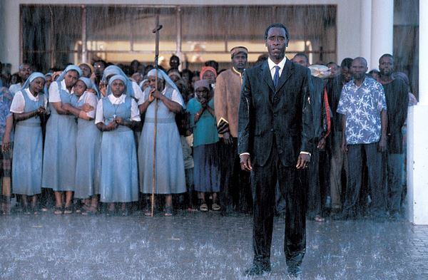
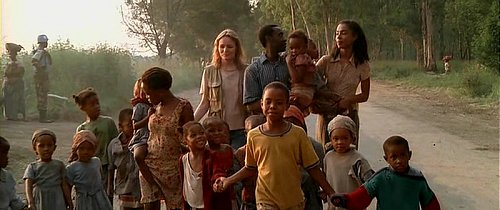

|

“르완다 대학살의 아픈 기억”
1994년 르완다에서 일어난 끔찍한 종족 학살은 20세기 최악의 인도주의적 재앙 중 하나로 기록되어 있다.
테리 조지 감독의 2004년 영화 '호텔 르완다(Hotel Rwanda)'는
이 비극적 사건 속에서 1,268명의 난민들의 생명을 구한 한 호텔 매니저의 실화를 담담하게 그려내고 있다.
1994년 르완다 수도 키갈리.후투족 출신 대통령이 두 부족의 공존을 위해 평화 협정에 동의하면서
수십 년간 이어진 후투족과 투치족의 대립은 일단락되는 듯 했다. |
사랑 받는 가장이자 지배인으로서
행복한 삶을 살아가는 폴은 하루빨리 협정이 체결돼 르완다가 안정되기를 바란다.
˝대통령이 살해당했다. 큰 나무를 베라. 투치족을 쓸어버리자!˝ 르완다의 대통령이 암살당하면서,
르완다의 상황은 악화된다. 후투족 자치군은 대통령 살해의 책임을 빌미로 아이들까지 투치족을 닥치는 대로 살해하고,
온건파 후투족까지 곱지 않은 시선으로 바라본다. 위협을 느낀 폴은 투치족 아내와 가족들의 안전을 위해 호텔로 피신한다.
폴은 후투족 민병대를 피해 호텔로 찾아온 투치족 1268명을 숨겨주고 그들의 목숨을 구했다.
“투치족은 바퀴벌레다. 후투족이여, 일어나라!” 르완다의 제노사이드는 약 100일동안 일어났고,100만명이 넘는 희생자가 발생된 것으로 추정된다. 나누어 계산하면 약 하루에 1만명, 7-8초에 한명꼴로 희생을 당한 셈이다. 이 영화는 제노사이드 자체의 원인과 사건을 다룬 것이라기보다도 호텔지배인 폴을 중심으로 서사가 진행된다. 기자 둘이 호텔에 바에 앉아 투치와 후투족의 차이에 대해 이야기를 나눈다. 흑인 기자가 두 민족의 차이를 설명해주자 백인 기자는 앞에 있던 폴에게 묻는다. 당신은 어느 민족인가요? 그리고 기자는 옆에 있던 두 여성에게도 똑같은 질문을 한다. 각각 후투, 투치라는 그들의 대답을 듣고서는 고개를 갸우뚱 거리며 혼잣말을 한다. There is no diffrence. 도대체 뭐가 다르다는 거지? 그렇다. 사실 후투와 투치의 민족적인 구분은 뚜렷하지 않다. 민족차이가 존재하긴 했지만 그마저도 오랜 기간 두 민족이 같이 지내며 그 구분이 모호했다고 하는 것이 맞을 것이다. 벨기에가 식민통치 당시, 민족을 둘로 나눈 구분은 결국 혐오에 이르러 서로를 죽이고 죽인 비극의 역사의 시작점이 된 것이다. 학살이 시작됐고 호텔의 투숙객들과 르완다 시내 곳곳에서 몸을 피하러 호텔로 사람들이 몰려드는 시점에 유럽에서 지원군들이 찾아왔다. 호텔 지배인 폴은 국제사회의 도움을 기다렸다. 본인 또한 호텔에서 일을 하며 그간 쌓아왔던 고위 관료직 등의 사람들이 도움을 줄 것으로 기대했던 것이다. 자신들이 살았다는 기쁨과 안도감도 잠시 사령관은 조금 전 도착한 군인들과 소통하고는 망연자실한 표정으로 폴에게 술을 달라 한다. 그는 본부측에서 르완다 현지인에 대한 구호활동에 대한 지원명령은 없다는 것을 알게 되었기 때문이다. 그러면서 폴은 이런 말을 듣는다. 마음만 먹으면 이 호텔조차도 당신 것 |
“우리를 구해줄 사람도, 우리를 위해 나서줄 사람도 없습니다. 으로 할 수 있지만 당신이 바꿀 수 없는 것 단 한 가지. 그것은 당신이 흑인, 그것도 아프리칸이라는 것. 즉, 유럽군이 호텔에 도착했을 때 자신을 도와줄 것이라 생각했던 건 오산이었다. 그들이 구한 생명은 르완다인이 아니라 호텔에 머물고 있던 외국인들 뿐이었다. 심지어 그들은 개까지도 함께 이 나라를 탈출하지만 르완다인들은 그 탈출행렬에 함께할 수 없었다. 그러면서 말한다. "우리 눈에 자넨 아무 것도 아니네. 자네가 믿는 서방세계 권력을 가진 자들, 그들에게 자넨 무의미한 존재야. You are Afirican." 이것은 국제사회가 본 르완다의 94년 사태를 어떤 식으로 방관하고 외면했는지를 여실히 보여주는 대표적 장면이기도 하다. 당시 국제사회는 이러한 잔학행위에 대해 눈을 감았다. 이후 700만명 중 200만명이 난민이 되었으며 국제사회의 지원이 거의 없었기에 수많은 이가 기근과 질병으로 죽어가야만 했으며 특히 고아가 상당수 증가했다고 한다. 더불어 강간피해자들은 에이즈에 걸렸으며 복잡한 치료를 받아야 했기에 의료비용의 증가로 국가는 큰 부담을 겪으며 고아의 증가는 르완다의 사회발전에 계속해서 영향을 미치게 되었다고 한다. 이후 실제 폴 루세사바기나는 투치족 반군 지도자 출신의 카가메 대통령이 인권을 유린한다며 목소리를 높였다. 후투족 출신으로 소수인 투치족 아내와 결혼한 루세사바기나는 학살이 멈춘 뒤에도 2년간 르완다에 머물다가 생명의 위협을 느껴 1996년 벨기에로 망명했다. 하지만 2020년에 르완다 당국에 의해 테러혐의로 체포당한 뒤, 2023년에 미국에 머무는 조건으로 풀려났다.  |